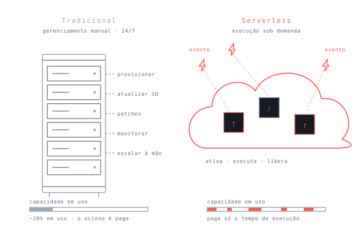
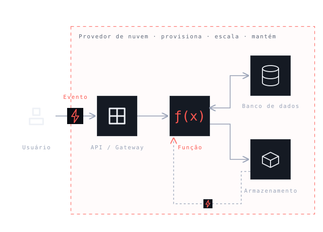
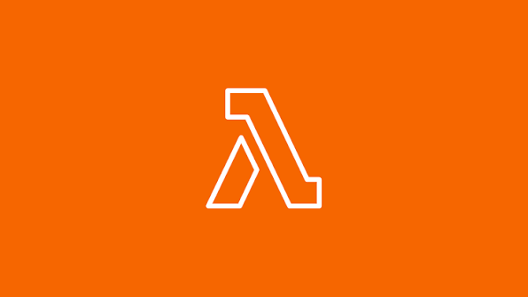
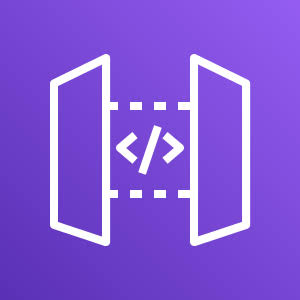
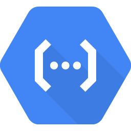
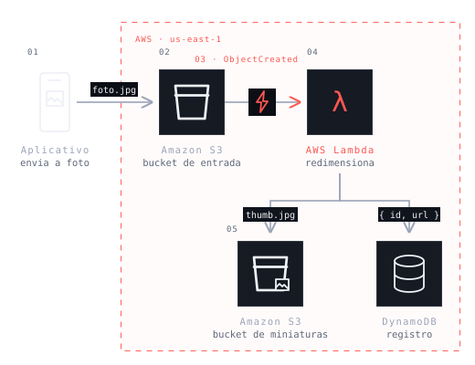

Definição, componentes e quem é responsável pelo quê.
Um modelo de computação em nuvem no qual você executa código sem gerenciar diretamente os servidores.
O nome engana: a máquina continua lá, só não é você quem cuida dela.
Manutenção, disponibilidade e escalabilidade passam para a nuvem.
O código roda quando algo acontece, não o tempo todo.
O time trabalha na lógica de negócio, não na infraestrutura.

Quem faz o quê dentro da arquitetura.
| Componente | Responsabilidade |
|---|---|
| Evento | Dispara a execução: requisição HTTP, upload, mensagem, agendamento. |
| API / Gateway | Recebe a requisição, autentica e roteia para a função correta. |
| Função | Executa a lógica de negócio; é pequena, isolada e sem estado. |
| Banco de dados | Guarda o estado da aplicação, já que a função não o mantém. |
| Armazenamento | Guarda arquivos e mídia, e pode gerar eventos ao receber conteúdo. |
| Provedor de nuvem | Provisiona, escala, monitora e mantém toda a infraestrutura. |

Do evento até a resposta, e o que acontece quando chegam mil de uma vez.
Sem nenhum servidor provisionado por nós.
Envia a requisição.
Autentica e roteia.
Executa a lógica.
Lê e grava o estado.
Volta ao usuário.
A função só existe enquanto executa: termina o trabalho, o ambiente é liberado.
Mil requisições simultâneas viram mil execuções em paralelo, sem nenhuma configuração.
A dor operacional de um lado, a resposta da arquitetura do outro.
Trade-offs, cenários, ferramentas e um caso real do começo ao fim.
A pergunta não é se é melhor, e sim em qual cenário as características ajudam.
O papel de cada serviço dentro do ecossistema.

Executa a função em resposta a um evento. É o FaaS mais conhecido.

Porta de entrada HTTP: recebe, autentica e encaminha às funções.
Armazena arquivos e dispara eventos quando recebe conteúdo novo.
Equivalente da Microsoft para execução de funções por evento.

Funções gerenciadas dentro do ecossistema do Google Cloud.
Contêineres sem servidor, para quando a função pura não basta.
O mesmo fluxo da arquitetura, agora com serviços reais.
O usuário envia a foto pelo aplicativo.
O arquivo chega ao bucket.
O storage avisa que há arquivo novo.
Redimensiona e gera a miniatura.
Miniatura no S3 e registro no banco.

Nenhum servidor ficou ligado esperando o upload. A função existiu apenas durante o processamento, e a cobrança corresponde a esse tempo.
Serverless troca o controle da infraestrutura por agilidade e escala automática. É uma escolha de cenário, não um upgrade universal.
aws.amazon.com/serverlessibm.com/topics/serverlessdatabricks.com/glossary/serverless-computingredhat.com/pt-br/topics/cloud-native-apps/what-is-serverlessalura.com.brserverless.com